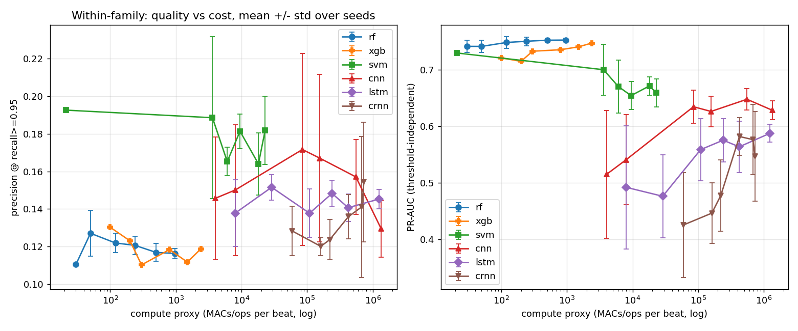
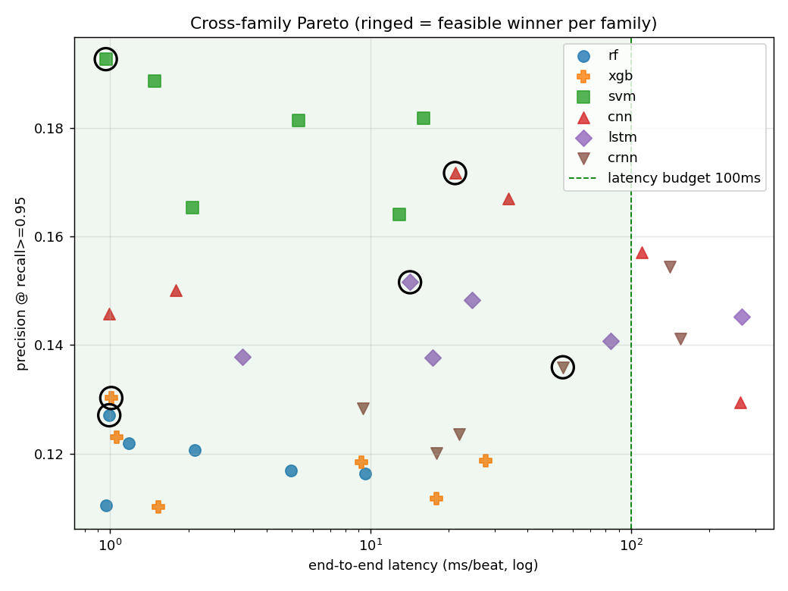
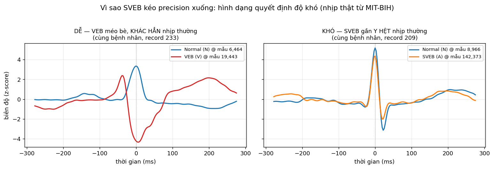
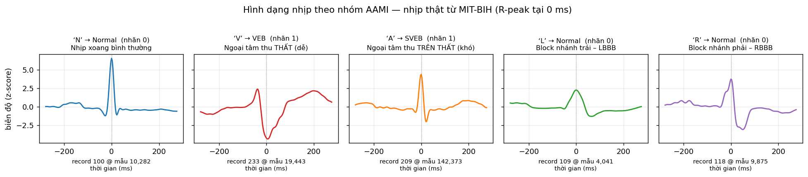

Bệnh tim mạch là nguyên nhân tử vong hàng đầu thế giới. Điện tâm đồ (ECG) ghi lại hoạt động điện của tim — một số nhịp bất thường (loạn nhịp) là dấu hiệu sớm và cần được phát hiện liên tục, kịp thời.
Chạy trên vi điều khiển + bối cảnh y tế đặt ra 4 ràng buộc cứng — mỗi ràng buộc có lý do riêng:
| Đầu vào | Mô tả | Dùng cho |
|---|---|---|
| 21 đặc trưng tay | thống kê thời gian · wavelet db4 · FFT · RR | RF · SVM |
| Raw 200×1 | nhịp thô ±100 mẫu quanh R-peak (~555 ms) | CNN |
| Raw 100×1 | nhịp thô giảm mẫu ×2 | LSTM |
| Cấu hình | Latency ms | Flash KB | Prec@0.95 ±std | Khả thi |
|---|---|---|---|---|
| n10_d3 | 1.0 | 2.9 | 0.110 ±0.00 | ✓ |
| n10_d5 ★ | 1.0 | 12.0 | 0.127 ±0.01 | ✓ |
| n20_d6 | 1.2 | 42.4 | 0.122 ±0.01 | ✓ |
| n50_d10 | 4.9 | 458.7 | 0.117 ±0.00 | ✓ |
| n80_d12 | 9.1 | 1,005 | 0.116 ±0.00 | ✓ |
| Cấu hình | Latency ms | Flash KB | Prec@0.95 ±std | Khả thi |
|---|---|---|---|---|
| linear ★ | 1.0 | 0.2 | 0.193 ±0.00 | ✓ |
| rbf1k | 1.8 | 14.9 | 0.189 ±0.04 | ✓ |
| rbf4k | 9.3 | 39.0 | 0.181 ±0.01 | ✓ |
| rbf7k | 14.2 | 74.3 | 0.164 ±0.02 | ✓ |
| rbf10k | 17.4 | 93.9 | 0.182 ±0.02 | ✓ |
| Cấu hình | Latency ms | Flash KB | Prec@0.95 ±std | Khả thi |
|---|---|---|---|---|
| c4 | 0.9 | 0.1 | 0.146 ±0.03 | ✓ |
| c8 | 1.6 | 0.3 | 0.150 ±0.03 | ✓ |
| c8-16 ★ | 19.8 | 52.9 | 0.172 ±0.05 | ✓ |
| c16-32-32 | 99.7 | 131 | 0.157 ±0.02 | ✓ |
| c16-32-64-64 | 238.6 | 324 | 0.129 ±0.02 | ✗ |
| Cấu hình | Latency ms | Flash KB | Prec@0.95 ±std | Khả thi |
|---|---|---|---|---|
| h4 | 3.4 | 0.5 | 0.138 ±0.02 | ✓ |
| h8 ★ | 31.1 | 1.4 | 0.152 ±0.01 | ✓ |
| h16 | 15.4 | 4.9 | 0.138 ±0.01 | ✓ |
| h32 | 58.4 | 17.8 | 0.141 ±0.01 | ✓ |
| h32x2 | 261.6 | 50.8 | 0.145 ±0.01 | ✗ |
| Họ | Winner | Prec@.95 | FPR | PR-AUC | Trễ (ms) | Flash KB | Recall DS2 | Khả thi |
|---|---|---|---|---|---|---|---|---|
| RF | n10_d5 | 0.127 | 0.83 | 0.742 | 1.0 | 12.0 | 0.78 ⚠ | ✓ |
| SVM | linear | 0.193 | 0.49 | 0.730 | 1.0 | 0.2 | 0.92 ⚠ | ✓ |
| CNN | c8-16 | 0.172 | 0.63 | 0.635 | 19.8 | 52.9 | 0.965 ✓ | ✓ |
| LSTM | h8 | 0.152 | 0.66 | 0.476 | 31.1 | 1.4 | 0.987 ✓ | ✓ |
Quán quân toàn cục: SVM linear — precision trung bình cao nhất, nhanh nhất, nhỏ nhất, xác định.
⚠ RF/SVM tụt recall trên DS2 (chuyển ngưỡng) · CNN/LSTM chuyển ngưỡng tốt nhưng đắt hơn.


| Nguồn kéo precision xuống | Loại | Bỏ được không? |
|---|---|---|
| Mất cân bằng lớp (~11% bất thường) → trần precision bị chặn bằng toán học | Bản chất | Không |
| Chia theo bệnh nhân (inter-patient, de Chazal) — test là người chưa từng gặp | Bản chất | Không (bỏ = ăn gian) |
| Hai lớp chồng lấn sinh học: SVEB trông gần y hệt nhịp thường (xem slide sau) | Bản chất | Không |
| Gộp nhị phân: SVEB (khó) lẫn VEB (dễ) chung một rổ "bất thường" | Bản chất / lựa chọn | Một phần |
| Ép recall ≥ 0.95 → hạ ngưỡng rất thấp → quét nhầm hàng loạt nhịp Normal | Lựa chọn (lâm sàng) | Có, đánh đổi recall |
| Mô hình tí hon + 1 chuyển đạo MLII — ràng buộc ESP32, đã bỏ kênh V1 | Lựa chọn (phần cứng) | Có, phá ràng buộc |

| Siêu lớp AAMI | Ký hiệu gốc | Nhãn nhị phân | Hình dạng QRS |
|---|---|---|---|
| N (Normal) | N, L, R, e, j | 0 — Bình thường | đa số chuẩn; NHƯNG L/R (block nhánh) lại MÉO TO |
| SVEB | A, a, J, S | 1 — Bất thường | gần y hệt Normal → KHÓ |
| VEB | V, E | 1 — Bất thường | méo bè, khác hẳn → DỄ |
| F (Fusion) | F | 1 — Bất thường | nhịp lai (VEB + Normal) |
| Q (Unknown) | /, f, Q | 1 — Bất thường | tạo nhịp / không phân loại (hiếm) |
